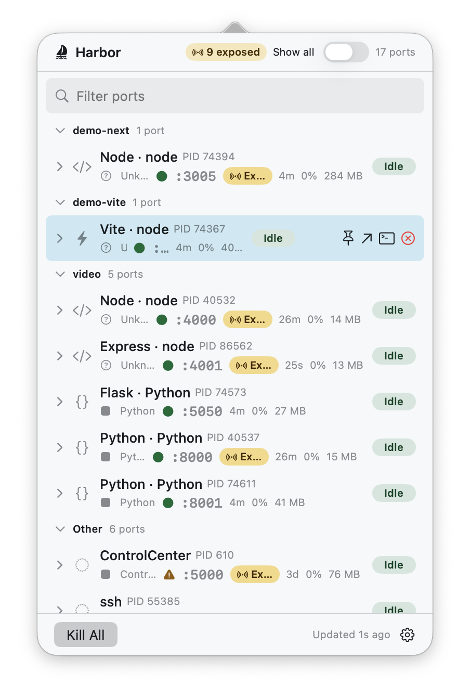
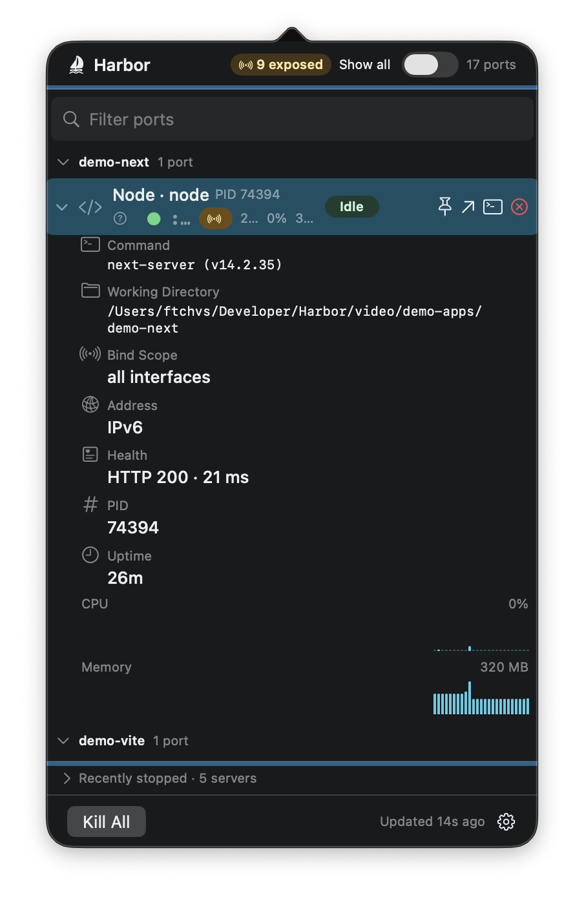

:3000:5173:8000:5432
Every listening port
IPv4 and IPv6, grouped by project, refreshed live. An exposed badge flags anything bound beyond loopback — the difference between a dev server and an accidental network service.
EADDRINUSE :3000 — never again
Harbor sits in your menu bar and shows every localhost listener: the framework behind it, live CPU, memory, uptime, and energy impact — with one-keystroke kill, open-in-browser, and jump-to-terminal when a port needs attention.
Harbor.dmg.sha256 · how to verify
Free · macOS 14+ · Universal · Developer ID signed & notarized · No telemetry

What it does
:3000:5173:8000:5432
IPv4 and IPv6, grouped by project, refreshed live. An exposed badge flags anything bound beyond loopback — the difference between a dev server and an accidental network service.
Next.jsViteRailsFlask
The process behind each port, named: Next.js, Vite, Rails, Django, Express, FastAPI, Phoenix, and more. System daemons get honest names too — AirPlay is AirPlay, not a mystery.
0.4% CPU184 MB4h 12m
Uptime, CPU, memory, and an energy badge per server, with rolling bar sparklines in the detail inspector — so the noisy one stands out before your fans do.
⏎ Kill⌘⇧K Kill All⌥⏎ Terminal
Kill safely (SIGTERM first, PID-reuse protected), Kill All with an enumerated confirmation, multi-select batch kill, open in browser, or jump straight to the owning terminal.
See it move
Deep visibility
Every row expands into an inspector: full command line, working directory, owning app, bind scope, health check, and CPU/memory history drawn as zero-anchored bars — idle looks idle.
Docker and Kubernetes port-forwards are labeled with their real
origin. Tunnels — ngrok, cloudflared, ssh -R —
show their public endpoint. An opt-in view surfaces UDP and
stuck non-LISTEN sockets for the “port is taken but nothing is
listening” days.
Terminal person? harbor-cli ships alongside:
list · kill · watch ·
open, with stable JSON output.

Install
Updates arrive in-app via Sparkle, signed with EdDSA.
Verify your download
curl -LO https://github.com/ftchvs/harbor/releases/latest/download/Harbor.dmg.sha256
shasum -a 256 -c Harbor.dmg.sha256No telemetry. Harbor never sends process, port, project, or command data anywhere. Inspection happens on your Mac.
Non-sandboxed for a reason. Harbor inspects and signals your own local processes — the App Sandbox forbids that, so it ships here as a Developer ID-signed, notarized DMG instead of on the App Store.